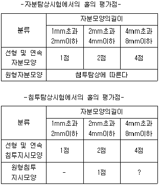
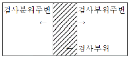

자기비파괴검사기사(구) (2010-03-07 기출문제)
1과목: 자기탐상시험원리
1. 프로드법으로 자분탐상시험할 때 자화전류의 개회로 전압이 30V이었다. 시험체에 동(COPPER)의 용착을 방지하기 위한 조치로 옳은 것은?
- 얇은 합판재를 프로드 선단에 부착한다.
- 강을 프로드 선단에 부착하여 시험한다.
- 반도체를 프로드 선단에 부착하여 시험한다.
- 플라스틱을 프로드 선단에 부착하여 시험한다.
(정답률: 알수없음)

2. 자성체에 남아있는 자계를 제거하는데 필요한 것은?
- 보자력
- 잔류자계
- 자기포화
- 자기차폐
(정답률: 알수없음)
3. 봉현 바자성체에 직류를 흘렸을 때 자계의 분포에 대한 설명으로 틀린 것은?
- 봉의 중심에서 자계의 세기는 0(영)이 된다.
- 전류를 2배로 증가시키면 자계의 세기도 2배가된다.
- 외부 표멘에서의 자계의 세기는 봉의 반지름이 증가할 수록 증가한다.
- 봉재 외부의 자계의 세기는 봉의 중심으로부터의 거리에 따라 감소한다.
(정답률: 알수없음)
4. 자분탐상시험에 사용되는 자분이 가져야 할 특성을 옳게 설명한 것은?
- 보자성이 높아야 하며 투자율도 높아야 한다.
- 보자성이 낮아야 하며 투자율도 낮아야 한다.
- 보자성이 낮아야 하며 투자율은 높아야 한다.
- 투자율이 높아야 하며 항자성도 높아야 한다.
(정답률: 알수없음)
5. 20(Oe)에서 자분모양이 나타나는 A형 표준시험편을 자계의세기 30(Oe)가 되는 전류값을 구하려 한다. A형표준시험편을 시험체에 놓고 자화전류를 서서히 증가하여 400[A]에서 자분모양이 나타났다면 자화 전류값은?
- 266A
- 400A
- 600A
- 1000A
(정답률: 알수없음)
6. 의사지시모양(의사모양)에 대한 설명으로 옳은 것은?
- 언더컷 등의 표면 결함
- 균열 이외의 미세한 결함 자분모양
- 내부 선형결함에 의한 희미한 자분지시모양
- 결함 이외의 원인으로 나타나는 자분지시모양
(정답률: 알수없음)
7. 초음파 탐상시험으로 알 수 없는 것은?
- 주파수의 측정
- 미세균열 검출
- 시험편의 두께
- 평균 입자의 크기
(정답률: 알수없음)
8. 자분탐상시험과 비교한 침투탐상시험의 장점은?
- 자분탐상시험에 비하여 표면하의 결함검출이 용이하다.
- 자분탐상시험 비하여 자성체의 탐상에 신뢰도가 높다.
- 자분탐상시험 비하여 표면의 원형결함 검출 강도가 높다.
- 자분탐상시험 비하여 시간이 경과해도 지시모양의 변화가 없다.
(정답률: 알수없음)
9. 초음파탐상시험의 장점에 대한 설명으로 틀린 것은?
- 라미네이션과 같은 결함탐상에 유용하다.
- 균열과 같은 미세한 결함을 거물할 수 있다.
- 검사되는 시험체의 두께에 대한 제한이 적다.
- 조대한 결정입자를 가진 시험체의 검사에 적합하다.
(정답률: 알수없음)
10. 일반적으로 매 검사마다 소모성 재료비가 가장 많이 소요되는비파괴 검사는?
- X선 투과시험
- 와전류 탐상시험
- 초음파 탐상시험
- X선 투시 영상시험
(정답률: 알수없음)
11. 각종 비파괴검사의 적용에 관한 설명으로 틀린 것은?
- 와전류탐상검사는 자성체의 내부결함 검사에 적용한다.
- 초음파 탐상검사는 내부결함이나 불연속 검사에 적용한다.
- 침투탐상검사는 표면의 작은 균열이나 흠집검출에 적용한다.
- 방사선 투과검사는 내부의 결함이나 형태를 검사하는데 적용한다.
(정답률: 알수없음)
12. 결함의 생성 중에는 검출이 용이하지만 결함의 생성이 정지된 상태에서는 검출이 어려운 비파괴 검사법은?
- 초음파 탐상시험
- 방사선 투과시험
- 와전류 탐상시험
- 음향방출 시험
(정답률: 알수없음)
13. 1[atm]에 대한 단위의 환신이 틀린 것은?
- 7.6torr
- 14.7psi
- 101.3kpa
- 760mmHg
(정답률: 알수없음)
14. 프로드를 이용한 원형자화법에서 3인치 미만의 프로드간격을 사용하지 않는 주된 이유는?
- 국부과열을 방지하기 위함이다.
- 시험자가 감전될 우려가 있기 때문이다.
- 전극 주위로 자분이 응집되기 때문이다.
- 아크 발생으로 인한 시험체의 소손을 방지하기 위함이다.
(정답률: 알수없음)
15. 결함 면적이 동일하다고 가정할 때 와전류탐상시험으로가장 잘 검출할 수 있는 결함은?
- 와류가 흐르는 방향에 평행인 균열
- 봉의 외측 표면으로 뻗쳐 있는 방사상 균열
- 직경 5cm 봉의 중간(2.5cm)부위에 있는 결함
- 직경 5cm 봉의 표면으로부터 2cm깊이에 있는 방사상 균열
(정답률: 알수없음)
16. 전자포획 할로겐 검출기의 특성에 대한 설명으로 틀린 것은?
- 구성 물질에 해가 되는 가열전극이 없다.
- 가열양극법과 비교하여 교정이 안정적이다.
- 대기 중에 존재하는 불순물을 검출하는데 높은 강도를 갖는다.
- 일시적으로 감도가 감소되어도 과누출이나 사용정도에따라 교정이 변하거나 장비가 손상되지 않는다.
(정답률: 알수없음)
17. 서로의 관계가 반바례가 아닌 비례관계가 성립되는 것은?
- 주파수와 파장
- 방사능과 비방사능
- 전기저항과 전기전도도
- 표피효과와 전류의 침투깊이
(정답률: 알수없음)
18. 와전류탐상시험으로 검사가 어려운 것은?
- 내부결함 검사
- 관의 표면균열
- 도금두께 측정
- 관의 외경변화
(정답률: 알수없음)
19. 침투탐상시험에서 침투액의 점성에 대한 설명 중 옳은 것은?
- 온도가 낮을수록 점성은 높아지고 침투시간은 길어진다.
- 온도가 낮을수록 점성은 낮아지고 침투시간은 짧아 진다.
- 온도가 높을수록 점성은 높아지고 침투시간은 짧아 진다.
- 온도가 높을수록 점성은 낮아지고 침투시간은 길어진다.
(정답률: 알수없음)
20. 자화곡선과 관련한 내용의 설명으로 옳은 것은?
- 항자력의 크기는 자화의 강도와 무관하다.
- 잔류자기가 많이 남게 되는 것은 저탄소강이다.
- 고탄소강과 같이 자화가 어려운 재질은 투자율이낮다.
- 투자율은 보자력과 함께 자계의 세기를 결정하게 된다.
(정답률: 알수없음)
2과목: 자기탐상검사
21. 외경 62mm인 튜브를 전류관통법에 의해 300A의 전류로원형자화할 때 튜브 외부표면에서의 자계 강도는 약 몇 A/m인가?
- 540
- 1240
- 1540
- 2040
(정답률: 알수없음)
22. 자분탐상용 검사액에 사용되는 분산매가 지녀야 할 특성으로 옳은 것은?
- 점도가 높을 것
- 휘발성이 작을 것
- 인화점이 낮을 것
- 적심성이 낮을 것
(정답률: 알수없음)
23. 자분탐상검사에 사용되는 자분에는 결함부를 명료하게 식별할 수 있기 위한 성능이 요구된다. 이 성능에 부합되는조건으로 옳은 것은?
- 투자율이 높고 보자력은 작을 것
- 보자력이 높고 투자율은 작을 것
- 잔류자기 및 투자율이 높을 것
- 잔류자기 및 보자력이 높을 것
(정답률: 알수없음)
24. 자분탐상검사에서 결함의 검출효율이 증대되는 조건이 아닌 것은?
- 표면의 폭에 공기 틈새가 커야 한다.
- 불연속의 깊이가 표면과 수직이어야 한다.
- 결함의 방향과 자계의 방향이 수직이어야 한다.
- 표면개구의 폭보다 깊이는 적어도 5배 이상이어야 한다.
(정답률: 알수없음)
25. 직류 연석봅으로 자분탐상검사를 수행하여 지시를 찾아냈을 때이 지시가 표면 또는 표면하 불연속인지 여부를 판명하기 위한 가장 적절한 방법은?
- 교류로 재검사한다.
- 자분을 다시 적용한다.
- 잔류법으로 재검사한다.
- 높은 전류로 재검사한다.
(정답률: 알수없음)
26. 축통전법에 의한 자화기기 접촉부에 납판이나 구리선망과 같은 전극의 접촉부를 갖는 주된 이유는?
- 접촉면에 밀착시키기 쉽고 전도성이 좋으므로
- 금속에 열을 가하여 자계를 유도하기 위하여
- 접촉면과 떨어지므로 신뢰성을 높이기 위하여
- 낮은 용융점을 가져시험체의 손상을 방지하므로
(정답률: 알수없음)
27. 자분탐상검사로 피로균열을 검출하는데 가장 효과적인자화전류는?
- 교류
- 직류
- 단상반파정류
- 삼상전바정류
(정답률: 알수없음)
28. 시험체를 탈자한 후 시험체에 대한 탈자 정도를 확인하는 방법으로 적합하지 않은 것은?
- 홀소자나 자기 다이오드를 사용한 자속계로 측정
- 시험체에 자침을 놓고 자침의 각도를 확인
- 철분이나 철판등을 시험체에 흡착하는 방법
- 시험체의 자극에 자침을 가까이하여 자침의 움직이는 각도로써 그 잔류 자극의 세기를 측정
(정답률: 알수없음)
29. 원통의 내면을 자화하기에 가장 좋은 자분탐상검사법은?
- 극간법
- 프로드법
- 축통전법
- 전류관통법
(정답률: 알수없음)
30. 자분탐상검사시 선형자계를 발생시켜 검사하는 방법은?
- 코일법
- 프로드법
- 축통전법
- 전류관통법
(정답률: 알수없음)
31. 자분탐상검사법 중 봉제품의 축방향의 결함을 검출하기 가장 좋은 밥법은?
- 코일법
- 프로드법
- 축통전법
- 자속관통법
(정답률: 알수없음)
32. 잔류자장을 제거하는 방법이 아닌 것은?
- 제품을 코일로부터 서서히 멀리한다.
- 코일을 제품으로부터 서서히 멀리한다.
- 자화전류를 단계적으로 증가시킨다.
- 제품을 큐리점 이상으로 열처리한다.
(정답률: 알수없음)
33. 저탄소강(0.04%)재료의 시험체를 탐상할 때 표면 아래에 존재하는 불연속을 검출하기 위하여 습식자분을 사용하는 경우더 깊은 곳까지 검출할 수 있는 방법은?
- 충격전류 사용
- 직류전류 사용
- 잔류전류 사용
- 교류전류 사용
(정답률: 알수없음)
34. 봉형 자성체에 원주방향의 균열이 예상된다면 자화 방법으로가장 적절한 것은?
- 코일법
- 프로드법
- 축통전법
- 전류관통법
(정답률: 알수없음)
35. 자분탐상검사에서 습식용 자분액을 사용 전에 항상 혼합시키는 가장 큰 이유는?
- 자화 전류가 커지기 때문이다.
- 산포되는 것을 방지하기 위함이다.
- 자분액의 침전을 막고 균일한 혼합을 위해서다.
- 자분액의 열화를 방지하고 변질된 자분의 성능을 회복시키기 위해서다.
(정답률: 알수없음)
36. 자분모양의 식별성을 향상시키기 위한 조건으로 볼수없는 것은?
- 적정한 자화
- 적정 자분 적용
- 흡착성이 높고 식별성이 낮은 자분
- 올바른 자세와 바른 탐상 및 관찰
(정답률: 알수없음)
37. 자분탐상검사 중 시험체에 전극을 접촉시켜 통전함에 따라시험체에 자계를 형성하는 방식이 아닌 것은?
- 극간법
- 프로드법
- 축통전법
- 직각통전법
(정답률: 알수없음)
38. 시험면의 밝기를 나타내는 단위는?
- 룩스(lx)
- 칸델라(cd)
- 루섹(lusec)
- 스토크스(st)
(정답률: 알수없음)
39. 표면직하의 결함 검출 및 연속법에 적용하기 어려운 자화 전류는?
- 직류
- 맥류
- 교류
- 충격전류
(정답률: 알수없음)
40. 코일법에서 시험체의 직경이 2인치, 길이가 10인치이고, 코일의 권수가 5일때 자화 전류값은?
- 1000A
- 1400A
- 2000A
- 8000A
(정답률: 알수없음)
3과목: 자기탐상관련규격및컴퓨터활용
41. 항공우주용 자기탐상 검사방법(KS W 4041)의 요구사항으로 틀린 것은?
- 지정된 기록은 2년간 보존해야 한다.
- 검사원은 CP 189에 따라인정을 받아야 한다.
- 열처리 공정을 포함할 경우 열처리 후에 검사한다.
- 기록은 검사한 각각의 부품을 추적할 수 있어야 한다.
(정답률: 알수없음)
42. 보일러 및 압력용기에 대한 자분탐상검사(ASME Sec.V.Art.7)에 따라 코일법으로 탐상시험을 할 때 시험체의 길이가10인치, 직경이 2인치인 강봉을 5회 코일을 감아 자화할 때요구되는 자화 전류는 몇 A인가?
- 1000
- 1400
- 1800
- 2000
(정답률: 알수없음)
43. 보일러 및 압력용기에 대한 자분탐상시험(ASME Sec.V.Art.7)에 따라 프로드를 이용하여 자화할 때, 프로드의 간격 75mm(3인치) 미만은 일반적으로 사용되지 않는다.그 주된 이유는?
- 시험체에 소손을 방지하기 위함이다.
- 작업자에게 감전의 유려가 있기 때문이다.
- 시험체에 국부과열을 발생시키기 때문이다.
- 프로드 주위에 자분의 집적을 유발하기 때문이다.
(정답률: 알수없음)
44. 철강 재료의 자분탐상시험방법 및 자분모양의 분류(KS D 0213)에 따라 탐상을 수행할 때 전처리 방법에 관한 설명으로옳지 않은 것은?
- 전처리의 범위는 시험범위보다 넓게 잡아야 한다.
- 시험체는 원칙적으로 단일부품으로 분해하여 검사한다.
- 건식용 자분을 사용하는 경우 원칙적으로 표면을 건조 시키지 않는다.
- 기름구멍 등 시험 후 내부의 자분제거가 곤란한 곳은 탐상 전 해가 없는 물질로 채운다.
(정답률: 알수없음)
45. 보일러 및 압력용기에 대한 자분탐상검사(ASME Sec.V.Art.7)에서 코일법으로 선형자화시 A.T(Ampere,Turn)의결정방법에 대한 설명으로 옳은 것은? (단 시험체의 길이는 L, 직경은 D이다)
- 시험체의 길이에 반비례하고 직경에 비례한다.
- 길이가 18“(450mm)이상인 시험체는 검사할 수 없다.
- 원통형이 아닌 각진 시험체의 경우 단면의 최대 대각선 길이를 D로한다.
- 길이 20“(약500mm),직경 5”(약125mm)인 시험체의 A.T계산시 L/D는 4로한다
(정답률: 알수없음)
46. 보일러 및 압력용기에 대한 표준자분탐상검사(ASME Sec.V.Art.25 SE-709)에 따라 형광자분을 사용할때자 분모양의 정확한 판단을 위해 검사원은 어두운 시험장소에서 최소한 몇 분 이상의 적응시간을 가져야 하는 가?
- 1분
- 3분
- 10분
- 15분
(정답률: 알수없음)
47. 철강 재료의 자분탐상 시험방법 및 자분모양의 분류(KS D 0213)에서 시험결과 나타난 지시가 의사모양 인지의 여부를 확인하는 방법으로 옳은 것은?
- 자기펜 자국은 탈자 후 재시험한다.
- 재질경계지시는 잔류법으로 재시험한다.
- 전류지시는 전류를 크게 하여 재시험한다.
- 표면거칠기지시는 백색페인트를 칠한 후 재시험한다.
(정답률: 알수없음)
48. 철강 재료의 자분탐상 시험방법 및 자분모양의 분류(KS D 0213)에서 용접부의 열처리 후에 하는 시험의 자화방법은 원칙적으로 어느 방법에 따라야 하는가?
- 극간법
- 코일법
- 프로드법
- 다중자화법
(정답률: 알수없음)
49. 철강 재료의 자분탐상 시험방법 및 자분모양의 분류(KS D 0213)의 탐상 내용에 대한 설명으로 틀린 것은?
- 투자율의 급변부에 나타나는 자분모양은 현미경 등으로 확인한다.
- 용접부의 열처리 후에 하는 시험의 자화방법은 프로드 법을 사용한다.
- 열처리가 지정된 용접부의 시험에서 합격여부는 최종 열처리 한 후에 한다.
- 여러개의 시험품을 동시에 시험하는 경우 자화방법 및 자화전류를 특히 고려해야 한다.
(정답률: 알수없음)
50. 보일러 및 압력용기에 대한 표준자분탐상검사(ASME Sec.V.Art.25 SE-709)에 따라 축통전법이나 전류관통법을 사용하여 자화하는 경우, 유도자화로 생성된자장의 측정 및 잔류 자장 검출에 효가적으로 사용되는 것은?
- A형 표준시험편
- 슬롯심(slotted shim) 시험편
- 홀 효과 프로브(hall effect probe)
- 파이 자장시계(Pie field indicator)
(정답률: 알수없음)
51. 자분탐상 시험으로 길이 6mm의 원형 자분모양을 얻었다. 배관 용접부의 비파괴시험 방법(KS B 0888)에 따른 평가 접수를 표를 이용하여 구한 것으로 옳은 것은?

- 2점
- 4점
- 6점
- 점수를 산정하지 않는다.
(정답률: 알수없음)
52. 보일러 및 압력용기에 대한 표준자분탐상검사(ASME Sec.V.Art.25 SE-709)에서 자분 제조자가 특별히 규정하지 않은 경우 습식자분의 분산농도 측정을 할 때 형광자분은 액조시료 100ml당 얼마 범위의 참전량(ml)이 권고되는가?
- 0.01~03⑤
- 0.1~0.4
- 0.5~1.0
- 1.2~2.4
(정답률: 알수없음)
53. 철강 재료의 자분탐상시험방법 및 자분모양의 분류(KS D 0213)에 따른 탐상시험 기록의 기호 표시로 틀린 것은?
- 교류 : ~
- 직류 : ~
- 충격전류 : A
- 맥류 : A
(정답률: 알수없음)
54. 항공우주용 자기탐상 검사 방법(KS W 4041)에서 검사필 부품의 기호가 지정이 되었을 경우 합격품을표시 하는 방법으로 옳은 것은?
- 알루미늄 페인트(Aluminum paint)로 칠한다.
- 착색을 적용할 경우는 빨간색 염료를 사용한다.
- 기호문자 M으로 각인, 애칭 똔느 녹색으로 착색한다.
- “OK"로 태그나 라벨에 도장을 찍어 꼬리표를 붙인다.
(정답률: 알수없음)
55. 보일러 및 압력용기에 대한 자분탐상검사(ASMESec.V.Art.7)에 따라 탐상 실시 전에 검사부위 및 검사 부위 주변을 전처리 하여야 한다. 검사부위 주변을 최소 얼마까지전처리 하여야 하는건가?

- 0.5인치(12,5mm)
- 1인치(25mm)
- 1.5인치(38mm)
- 2인치(51mm)
(정답률: 알수없음)
56. 네트워크에서 도메인이나 호스트 이름을 숫자로 된 IP 주소로 해석해 주는 TCP/IP 서비스는?
- DNS
- Protocol
- Router
- ARPANET
(정답률: 알수없음)
57. 오류의 검출과 교정까지 가능한 코드는?
- 자기 보수 코드
- 가중치(Weighted)코드
- 오류 검출 코드
- 해밍(Hamming)코드
(정답률: 알수없음)
58. 컴퓨터 운영체제에서 링커(Linker)의 역할은?
- 원시 프로그램을 기계어로 번여간다.
- 목적 프로그램을 실행하기 위해 메모리에 적재한다.
- 여러 개의 목적 모듈을 모아서 실행 가능한 프로그램으로 만든다.
- 인터럽트 발생 시 인터럽트 처리 루틴으로 제어권을 부여한다.
(정답률: 알수없음)
59. 컴퓨터의 기종에 관계없이 웹페이지를 작성하는 언어를 가르키는 말로서 여러 가지 태그를 이용하는 문단 형식이나표, 글자, 크기를 지정하는 것은?
- 하이퍼텍스트(Hypertext)
- 하이퍼미디어(Hypermedia)
- HTML(Hyper text Markup Language)
- HTTP(Hyper text Transfer Protocol)
(정답률: 알수없음)
60. 데이터 통신 시스템 중 데이터 터미널 장치(DTE)의 기능이아닌 것은?
- 입/출력 기능
- 신호 변환 기능
- 전송 제어 기능
- 기억 기능
(정답률: 알수없음)
4과목: 금속재료학
61. 상온에서 BCC (Body-centered cubic lattice)의 결정구조인 것은?
- Ag, Au, V, Be
- Ba, Fe, K, V
- Zn, Zr, La, Mg
- Al, Fe, Cu, Co
(정답률: 알수없음)
62. 60%Cu-35%Zn-5%Al의 조성을 가진 합금에서 겉보기의 아연 함유량은 몇 %인가?(단 Al의 아연 당량은 6이다)
- 28%
- 32%
- 48%
- 52%
(정답률: 알수없음)
63. Mg 합금이 구조재료로서 갖는 특성에 관한 설명으로 틀린 것은?
- 소성가공성이 높아 상온변형이 쉽다.
- 비감도가 커서 항공우주용 재료에 유리하다.
- 감쇠능이 주철보다 커서 소음방지 재료로 우수하다.
- 기계가공성이 좋고 아름다운 절삭면이 얻어진다.
(정답률: 알수없음)
64. 금속의 냉간가공(cold working)시 나타나는 성질로 옳은 것은?
- 인장강도가 감소한다.
- 전기전도도가 감소한다.
- 단면수축률이 증가한다.
- 화학반응성이 감소한다.
(정답률: 알수없음)
65. 금속을 원자로용, 고융점구조재료, 반도체, 알칼리 토류군으로 분류할 때 반도체군에 해당되는 것은?
- W, Re
- Na, Li
- Ge, Si
- U, Th
(정답률: 알수없음)
66. 다음 중 백금(Pt)에 대한 설명으로 옳은 것은?
- 백금은 회백색의 체심입방정 금속이다.
- 비중은 6.7이고 용융점은 670℃정도이며 내식성이 좋으므로 화학공업에 사용한다.
- 백금은 산화되지 않으나 P, S, SI등의 알칼리, 알칼리토금속의 염류에는 침식된다.
- 45% ~ 85%고 합금은 열전대로 사용하며, 0.8% ~ 5%Pd의 백금합금은 장식용으로 사용한다.
(정답률: 알수없음)
67. TI의 기계적 성질에 대한 설명으로 틀린 것은?
- 불순물에 의한 영향이 크다.
- 면심입방금속이므로 소성변형의 제약이 많다.
- 내력 / 인장강도의 비가 1에 가깝다.
- 상온에서 300℃근방의 온도 구역에서도 강도의 저하가 뚜렷하게 나타난다.
(정답률: 알수없음)
68. 고속도공구강의 특징을 설명한 것 중 틀린 것은?
- 고온경도 및 내마모성이 크며 인성을 가진다.
- 템퍼링 처리에 의해 2차 경화하는 성질이 있다.
- W계 고속도공구강의 기본 조성은 18%W-4%Cr-1%V이다.
- 절삭성은 우수하나 경도, 강도는 탄소강보다 낮다.
(정답률: 알수없음)
69. 순철의 자기 변태점에 대한 설명으로 옳은거슨?
- 가열에 의해 BCC격자가 FCC격자로 변한다.
- A2변태라 하며 약 768℃에서 일어난다.
- A3변태라 하며 약 910℃에서 일어난다.
- A4변태라 하며 약 1200℃에서 일어난다.
(정답률: 알수없음)
70. 기계구조용 강에서 마텐자이트를 뜨임 제 1단계에서 실시하여인장강도 140kgf/mm2이상, 항복점 120kgf/mm2 이상의기계적 성질을 갖도록 한 강을 무엇이라 하는 가?
- 초강인강
- 마르에이징강
- 기계구조용 탄소강
- 기계구조용 저합금강
(정답률: 알수없음)
71. 심냉(Sub-zero)처리를 실시하는 이유로 옳은 것은?
- 오스테나이트를 펄라이트로 변태시키기 위하여
- 펄라이트를 마텐자이트로 변태시키기 위하여
- 잔류 오스테나이트를 마텐자이트로 변태시키기 위하여
- 트루스타이트를 마텐자이트로 변태시키기 위하여
(정답률: 알수없음)
72. 비정질 금속을 제조하는 방법이 아닌 것은?
- 원심 급냉법
- 침지법
- 진공 증착법
- 전기 또는 화학도금법
(정답률: 알수없음)
73. Al 및 그 합금의 질별 기호에서 H가 의미하는 것은?
- 제조한 그대로인 것
- 풀림을 한 것
- 가공 경화한 것
- 용체화 처리한 것
(정답률: 알수없음)
74. 다음의 첨가 원소 중 강의 경화능을 가장 향상시키는 원소는?
- Sn
- Sl
- Cu
- Mn
(정답률: 알수없음)
75. 오스테나이트계 스테인리스강의 부식 중 공식(Pitting)은 부동태 파악을 국부적으로 파괴 또는 관통하는 것을 말하는데이러한 공식을 방지하기 위한 대책으로 틀린 것은?
- 할로겐 이온의 농도를 얇게한다.
- 질산염, 크롬산염 등을 첨가한다.
- 산소농담전지의 형성을 피하거나 부식생성물을 제거한다.
- 재료 중 C를 적게 하거나 Ni, Cr, Mo 등을 많게 한다.
(정답률: 알수없음)
76. 황동 합금 중에서 조직이 α+β이므로 상온에서 전연성이 낮으나 강도가 크고 6:4 황동이라 불리우는 합급은?
- 문쯔 메탈
- 카트리즈 브라스
- 길딩 메탈
- 로우 브라스
(정답률: 알수없음)
77. 판재를 원판으로 뽑기 위해 하중 9300kg을 가했을 때의 전단 응력은 약 몇 kgf/cm2인가?(단 원판의 직경은 30mm 판재의 두께는 2.7mm이다.)
- 3455
- 3655
- 3855
- 4088
(정답률: 알수없음)
78. 시효처리에 대한 설명으로 틀린 것은?
- 과포화 고용체를 이용한 제2상의 석출과정이다.
- 온도가 높거나 시간이 길면 복원현상이 나타난다.
- 시효처리는 온도의 증가에 따른 취성증대가 목표이다.
- Al-Cu합금의 석출과정은 과포화고용체→G.P대→중간상→안정상 순이다.
(정답률: 알수없음)
79. 다음 중 가단주철의 종류에 속하지 않는 것은?
- 백심 가단주철
- 흑심 가단주철
- 펄라이트 가단주철
- 편상 흑연 가단주철
(정답률: 알수없음)
80. 일반구조용강에서 청열취성의 원인이 되는 고용 성분은?
- N
- C
- AL
- Nb
(정답률: 알수없음)
5과목: 용접일반
81. 피복 금속 아크 용접봉 E4316은 어떤 계통의 용접봉인가?
- 저수소계
- 철분수소계
- 철분산화철계
- 고산화티탄계
(정답률: 알수없음)
82. 용접부 비파괴검사에서 형광침투검사의 조작순서가 가장 적합한 것은?
- 검사면세척-침투액적용-침투액세척-현상액 적용과 건조-검사
- 검사면세척-현상액 적용과 건조-침투액세척-침투액 적용-검사
- 검사면세척-침투액세척-현상액 적용과 건조-침투액 적용-검사
- 검사면세척-침투액적용-현상액 적용과 건조-침투액 세척-검사
(정답률: 알수없음)
83. 용접 중에 아크를 중단시키면 중단된 부분이 오목하거나 납작하게 파진 모습으로 남는 것을 무엇이라고 하는가?
- 오버 랩
- 기공
- 크레이터
- 선상조직
(정답률: 알수없음)
84. 아크 전압 30V, 아크전류 200A, 용접속도 10cm/min으로 피복 아크 용접을 할 경우 발생하는 용접입열은 얼마인가?
- 3600 j/cm
- 36000 j/cm
- 6000 j/cm
- 60000 j/cm
(정답률: 알수없음)
85. 피복 아크 용접에서 직류정극성의 특징으로 틀린것은?
- 비드 폭이 좁다.
- 모재의 용입이 깊다.
- 열 분배는 용접봉에 30%, 모재에 70%정도이다.
- 박판, 주철, 합금강, 비철금속의 용접에만 쓰인다.
(정답률: 알수없음)
86. 프로젝션 용접법의 특징 설명으로 가정 적합한 것은?
- 전극의 수명이 짧고, 작업 능률이 낮다.
- 얇은 판과 두꺼운 판의 용접은 불가능하다.
- 여러 가지 변형적인 저항용접이 불가능하다.
- 2개 이상의 돌기부를 1회에 용접할 수 있으므로 용접속도가 빠르다.
(정답률: 알수없음)
87. 판 두께 9mm, 루트간격 1,5mm인 연강판을 4mm 용접봉으로 피복 아크 용접 아래보기 V형 맞대기 이음 시 용접 전류로가장 적당한 것은?
- 80 ~ 100A
- 100 ~ 130A
- 140 ~ 160A
- 180 ~ 200A
(정답률: 알수없음)
88. 용접부의 취성파괴에 대한 일반적인 특징 설명으로 가장 정합한 것은?
- 파단은 판 표면에서의 45도 각도로 발생한다.
- 항복점 이하의 평균응력에서는 발생하지 않는다.
- 온도가 높을수록 발생하기 쉽다.
- 취성파괴의 기점은 응력과 변형이 집중하는 곳에서부터 발생한다.
(정답률: 알수없음)
89. 직류 및 교류 아크 용접기의 비교 내용 중 직류 용접기에 대한 설명으로 틀린 것은?
- 교류 용접기 보다 무부하 전압이 낮다
- 교류 용접기에 비해 자기 쏠림 현상이 거의 없다.
- 교류 용접기에 비해 아크 안정성이 우수하다.
- 교류 용접기에 비해 역율이 양호하다.
(정답률: 알수없음)
90. 가스용접에 이용되는 가연성 가스 종류 중 연소시 가장 많은산소(O2)를 필요로 하는 것은?
- 아세틸렌
- 수소
- 프로판
- 메탄
(정답률: 알수없음)
91. 서브머지드 아크 용접법의 장점 설명으로 틀린 것은?
- 용입이 깊다.
- 비드 외간이 매우 아름답다.
- 용융속도 및 용착속도가 빠르다.
- 적용재료에 제한을 받지 않는다.
(정답률: 알수없음)
92. 내용적 40ℓ의 산소용기에 140 기압의 산소가 들어있다. 가변압식 토치로 400번 팁을 사용하여 혼합비 1:1의 표준불꽃으로 작업하면 몇 시간 작업할 수 있는 가?
- 7시간
- 9시간
- 12시간
- 14시간
(정답률: 알수없음)
93. 용접전류 500A 10초간 용접하여 A의 제품을 형성하였다. 이때 A의 고유 전기저항을 0.5Ω라 하면 이때의 전기 저항열은?
- 100㎉
- 10㎉
- 300㎉
- 350㎉
(정답률: 알수없음)
94. 전기저항 용접 중 이음형상이 겹치기 용접에 해당되지 않는 것은?
- 점 용접
- 프로젝션 용접
- 매시 심 용접
- 업셋 용접
(정답률: 알수없음)
95. 용접법 중 융접에 속하는 것은?
- 초음파 용접
- 유도 가열 용접
- 전자 빔 용접
- 심 용접
(정답률: 알수없음)
96. 황동 합금성분 중 경납땜 재료로 사용할 수 없는 것은?
- Cu 60% - Zn 40%
- Cu 55% - Zn 45%
- Cu 50% - Zn 50%
- Cu 30% - Zn 70%
(정답률: 알수없음)
97. 가스용접봉의 성분이 모재에 미치는 영향을 잘못 설명한 것은?
- 탄소(C) - 강의 강도, 연신율, 굽힘성이 감소된다.
- 규소(SI) - 기공은 막을 수 있으나 강도가 떨어진
- 다.인(P) - 강에 취성을 주고 가연성을 잃게 한다.
- 황(S) - 용접부의 저항력을 감소시키고 기공 발생의 원인이 된다.
(정답률: 알수없음)
98. 가스용접용 토치는 사용하는 아세틸렌가스 압력에 의하여 저압식, 중압식, 고압식으로 나누어진다. 저압식 토치의 아세틸렌 공급압력으로 가장 적합한 것은?
- 2.⑤kgf/cm2
- 0.07kgf/cm2
- 0.4kgf/cm2
- 1.5kgf/cm2
(정답률: 알수없음)
99. 용접봉의 용융속도를 가장 잘 설명한 것은?
- 단위시간당 소비되는 모재의 무게
- 단위시간당 소비된 용접봉의 길이 또는 무게
- 일정량의 모재가 소비될 때까지의 시간
- 일정길이의 용접봉이 소비될 때까지의 시간
(정답률: 알수없음)
100. 용접부의 자분 탐상검사에 사용된느 자분에 착색된 색의 종류가 아닌 것은?
- 백색
- 흑색
- 적색
- 회색
(정답률: 알수없음)